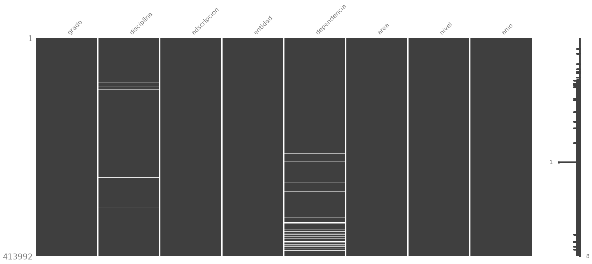

import pandas as pd
import missingno as msno
import matplotlib.pyplot as plt
import matplotlib.ticker as mticker
# import matplotlib as mpl
plt.style.use('enerdata_square.mplstyle')f = "../data/002_processed/sni.csv"
tmp = pd.read_csv(f)msno.matrix(tmp)
tmp.grado.unique()array(['DR.', 'DRA.', 'M. EN C.', 'QUIM.', 'LIC.', 'MED', 'Maestría',
'M.EN C.', 'M. EN I', 'MED.', 'MTRO.', 'BIOL.', 'ING.', 'M.C.',
'M. EN I.', 'MTRA.', 'M.V.Z.', 'MTR', 'Q.F.B', 'M. EN C',
'M. EN B.', 'ARQ.', 'FIS.', 'M. EN A', 'Q.F.B.', 'M.I.Q.',
'Q. F. B.', 'ESPECIALIDAD', 'M EN C.', 'MED. ESP.', 'M.I.',
'Q.B.P.', 'MTR0.', 'M. I.', 'M. C.', 'PSIC.', 'MAESTRIA', 'CP.',
nan, 'Especialidad', 'MAT.', 'BIOQ.', 'QFB.', 'M. EN A.', 'QUIM,.',
'-', 'LIC'], dtype=object)# SNI solo tiene los campos definidos con la lista grados,
# pues son los únicos que se pueden identificar como hombre,mujer
grados = ["DR.","DRA.","MTRO.","MTRA."]
sni = tmp[tmp["grado"].isin(grados)].copy()
mapeo_sexo = {
'DR.': 'H',
'MTRO.': 'H',
'DRA.': 'M',
'MTRA.': 'M'
}
# Crear la nueva columna "sexo" usando el mapeo
sni['sexo'] = sni['grado'].map(mapeo_sexo)sni.anio.unique()array([2000, 2001, 2002, 2003, 2004, 2005, 2006, 2007, 2008, 2009, 2010,
2011, 2012, 2013, 2014, 2015, 2016, 2017, 2018, 2019, 2020, 2023])historico = sni.groupby(["anio"]).size()
historicoanio
2000 6942
2001 7514
2002 8667
2003 8667
2004 9613
2005 10287
2006 11404
2007 12662
2008 13756
2009 14522
2010 15408
2011 16305
2012 17057
2013 18085
2014 19472
2015 21182
2016 22901
2017 24970
2018 26501
2019 28427
2020 32288
2023 40575
dtype: int64
fig, ax = plt.subplots()
# --- Gráfica de líneas (tu código de ejemplo) ---
ax.plot(historico.index, historico, color="purple", label="Hombres")
# Eliminamos el eje y (ticks, labels y línea del eje)
ax.yaxis.set_visible(False)
ax.tick_params(axis='y', which='both', left=False, labelleft=False)
# --- Marcadores y anotaciones de las series ---
last_year = total_anios.index.max()
# # Serie de Hombres
for anio, valor in historico.items():
if anio % 5 == 0 or anio == last_year:
ax.plot(anio, valor, 'o', color="purple")
if anio == last_year:
label = f"{valor:,.0f} personas\nen {anio}"
ha_align = "left"
xy_coords = (anio, valor + 100)
offset = (10, -10)
else:
label = f"{valor:,.0f}"
ha_align = "center"
xy_coords = (anio, valor + 30)
offset = (0, 7)
ax.annotate(label,
xy=xy_coords,
xytext=offset,
textcoords="offset points",
ha=ha_align,
color="purple",
fontsize=10)
# # Serie de Mujeres
# for anio, valor in total_anios["M"].items():
# if anio % 5 == 0 or anio == last_year:
# ax.plot(anio, valor, 'o', color="seagreen")
# if anio == last_year:
# label = f"{valor:,.0f} mujeres\nen {anio}"
# ha_align = "left"
# xy_coords = (anio, valor + 100)
# offset = (10, -10)
# else:
# label = f"{valor:,.0f}"
# ha_align = "center"
# xy_coords = (anio, valor + 30)
# offset = (0, 10)
# ax.annotate(label,
# xy=xy_coords,
# xytext=offset,
# textcoords="offset points",
# ha=ha_align,
# color="seagreen",
# fontsize=12)
# --- Título usando ax.annotate ---
# Se arma en dos líneas, usando coordenadas en "axes fraction" para posicionarlo relativo al área de la gráfica.
# La primera línea se compone de varias anotaciones:
# "Número de " (color por defecto),
# "mujeres" (en seagreen),
# " y " (color por defecto),
# "hombres" (en naranja),
# " en el" (en gris).
# ax.annotate("Número de ",
# xy=(0, 1.1), xycoords="axes fraction",
# ha="left", va="bottom", fontsize=14)
# ax.annotate("mujeres",
# xy=(0.15, 1.1), xycoords="axes fraction",
# ha="left", va="bottom", fontsize=14, color="seagreen")
# ax.annotate(" y ",
# xy=(0.25, 1.1), xycoords="axes fraction",
# ha="left", va="bottom", fontsize=14)
# ax.annotate("hombres",
# xy=(0.28, 1.1), xycoords="axes fraction",
# ha="left", va="bottom", fontsize=14, color="orange")
# ax.annotate(" en el",
# xy=(0.39, 1.1), xycoords="axes fraction",
# ha="left", va="bottom", fontsize=14, color="gray")
# Segunda línea completa del título
ax.annotate("Sistema Nacional de Investigadoras e Investigadores",
xy=(0, 1.07), xycoords="axes fraction",
ha="left", va="top", fontsize=14)
ax.set_ylim(0,50000)
plt.show()
fig.savefig("../historico.png")total_anios = sni.groupby(["anio", "sexo"]).size().unstack(fill_value=0)
fig, ax = plt.subplots()
# --- Gráfica de líneas (tu código de ejemplo) ---
ax.plot(total_anios.index, total_anios["H"], color="orange", label="Hombres")
ax.plot(total_anios.index, total_anios["M"], color="seagreen", label="Mujeres")
# Eliminamos el eje y (ticks, labels y línea del eje)
ax.yaxis.set_visible(False)
ax.tick_params(axis='y', which='both', left=False, labelleft=False)
# (Si usabas ax.set_ylabel, lo comentamos o eliminamos)
# ax.set_ylabel("Personas")
# ax.yaxis.set_major_formatter(mticker.StrMethodFormatter("{x:,.0f}"))
# --- Marcadores y anotaciones de las series ---
last_year = total_anios.index.max()
# Serie de Hombres
for anio, valor in total_anios["H"].items():
if anio % 5 == 0 or anio == last_year:
ax.plot(anio, valor, 'o', color="orange")
if anio == last_year:
label = f"{valor:,.0f} hombres\nen {anio}"
ha_align = "left"
xy_coords = (anio, valor + 100)
offset = (10, -10)
else:
label = f"{valor:,.0f}"
ha_align = "center"
xy_coords = (anio, valor + 30)
offset = (0, 5)
ax.annotate(label,
xy=xy_coords,
xytext=offset,
textcoords="offset points",
ha=ha_align,
color="orange",
fontsize=12)
# Serie de Mujeres
for anio, valor in total_anios["M"].items():
if anio % 5 == 0 or anio == last_year:
ax.plot(anio, valor, 'o', color="seagreen")
if anio == last_year:
label = f"{valor:,.0f} mujeres\nen {anio}"
ha_align = "left"
xy_coords = (anio, valor + 100)
offset = (10, -10)
else:
label = f"{valor:,.0f}"
ha_align = "center"
xy_coords = (anio, valor + 30)
offset = (0, 10)
ax.annotate(label,
xy=xy_coords,
xytext=offset,
textcoords="offset points",
ha=ha_align,
color="seagreen",
fontsize=12)
# --- Título usando ax.annotate ---
# Se arma en dos líneas, usando coordenadas en "axes fraction" para posicionarlo relativo al área de la gráfica.
# La primera línea se compone de varias anotaciones:
# "Número de " (color por defecto),
# "mujeres" (en seagreen),
# " y " (color por defecto),
# "hombres" (en naranja),
# " en el" (en gris).
ax.annotate("Número de ",
xy=(0, 1.1), xycoords="axes fraction",
ha="left", va="bottom", fontsize=14)
ax.annotate("mujeres",
xy=(0.15, 1.1), xycoords="axes fraction",
ha="left", va="bottom", fontsize=14, color="seagreen")
ax.annotate(" y ",
xy=(0.25, 1.1), xycoords="axes fraction",
ha="left", va="bottom", fontsize=14)
ax.annotate("hombres",
xy=(0.28, 1.1), xycoords="axes fraction",
ha="left", va="bottom", fontsize=14, color="orange")
ax.annotate(" en el",
xy=(0.39, 1.1), xycoords="axes fraction",
ha="left", va="bottom", fontsize=14, color="gray")
# Segunda línea completa del título
ax.annotate("Sistema Nacional de Investigadoras e Investigadores",
xy=(0, 1.07), xycoords="axes fraction",
ha="left", va="top", fontsize=14)
plt.show()fig, ax = plt.subplots(figsize=(10,6))
# Eliminamos el eje y (ticks, labels y línea del eje)
ax.yaxis.set_visible(False)
ax.tick_params(axis='y', which='both', left=False, labelleft=False)
# --- Trazamos las líneas para Hombres y Mujeres ---
ax.plot(total_anios.index, total_anios["H"], color="orange", label="Hombres", linewidth=2)
ax.plot(total_anios.index, total_anios["M"], color="seagreen", label="Mujeres", linewidth=2)
# --- Relleno del área entre las dos curvas para resaltar la diferencia ---
ax.fill_between(total_anios.index, total_anios["H"], total_anios["M"],
where=(total_anios["H"] >= total_anios["M"]),
interpolate=True, color="orange", alpha=0.3, label="Mayor Hombres")
ax.fill_between(total_anios.index, total_anios["H"], total_anios["M"],
where=(total_anios["H"] < total_anios["M"]),
interpolate=True, color="seagreen", alpha=0.3, label="Mayor Mujeres")
# --- Formateo de ejes ---
ax.set_xlabel("Año")
ax.set_ylabel("Cantidad de personas")
ax.yaxis.set_major_formatter(mticker.StrMethodFormatter("{x:,.0f}"))
# --- Título en dos líneas, alineado a la izquierda ---
title = ("Diferencia entre Hombres y Mujeres\n"
"Sistema Nacional de Investigadoras e Investigadores")
ax.set_title(title, loc="left", fontsize=14)
# --- Anotaciones de la diferencia ---
# Se itera sobre cada año y se anota la diferencia (valor absoluto) entre las series
# en el centro vertical entre ambas curvas.
last_year = total_anios.index.max()
for anio, h_value in total_anios["H"].items():
if anio % 5 == 0 or anio == last_year:
m_value = total_anios["M"].loc[anio]
diff = abs(h_value - m_value)
mid_y = (h_value + m_value) / 2
ax.annotate(f"{diff:,.0f}",
xy=(anio, mid_y),
ha="center", va="center",
fontsize=12, color="black",
bbox=dict(boxstyle="round,pad=0.3", fc="white", ec="none", alpha=0.7))
# ax.legend(loc="best")
plt.show()